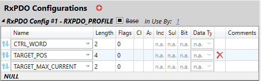
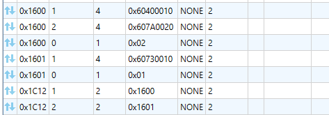

Axis Parameter
DRIVE_PARAMETER AXIS(n) = value
value = DRIVE_PARAMETER AXIS(n)

This parameter is a general name that is used to allow access to some named
objects via the EtherCAT PDO. DRIVE_PARAMETER may be mapped to either TxPDO or
RxPDO objects by using the EC_EXTEND EtherCAT Extension file.
EC_EXTEND RxPDO containing TARGET_MAX_CURRENT

The parameter in the PDO shown here will be mapped to DRIVE_PARAMETER.
EC_EXTEND SDO initialisation list. (Pre-Op -> Safe-Op)
The TARGET_MAX_CURRENT, being the 3 rd object in the PDO, will be mapped to drive object 0x6073, sub-index 0x00 as shown.